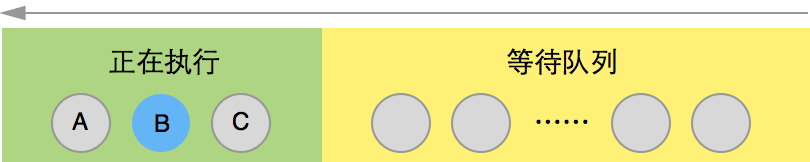
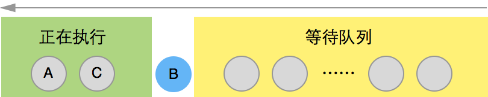
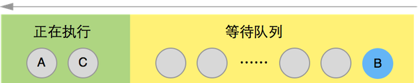

理解setTimeout、setImmediate、process.nextTick的区别

setTimeout注册的回调会在事件循环的timers、poll和closing callbacks阶段执行。需要注意的是，计时器默认定义的 TIMEOUT_MAX 的取值范围是[1, 2 ^ 31 - 1]，不足 1 或者超过上限都会初始化为 1，也就是说你调用setTimeout(fn, 0)和setTimeout(fn, 1)的效果是一样的。另一点，当timer到延时处理方法到达触发条件，于是将延时处理方法加入任务队列，必须等到当前代码（执行栈）执行完，主线程才会去执行它指定的回调函数。没有办法保证，回调函数一定会在setTimeout()指定的时间执行。（setInterval会不管回调，准时调用）process.nextTick方法可以在当前"执行栈"的尾部-->下一次Event Loop（主线程读取"任务队列"）之前-->触发。process指定的回调函数注册的回调会在事件循环的当前阶段结束前执行，而不是只有poll、check阶段才会执行。process是内核模块，运行时是全局上下文，所以microtask只有一个，无论你是在哪个阶段、哪个闭包内用nextTick注册的回调都会被push到nextTickQueue，并在事件循环当前阶段结束前执行。setImmediate注册的回调会在check阶段执行,属于check观察者，其设置的回调函数，会插入到下次事件循环的末尾。。因为它需要由check watcher来执行，check watcher只在check阶段处于active状态。与process.nextTick不同，setImmediate 因运行时的上下文不同而产生不同的ImmediateList，所以microtask可以有多个。setImmediate会在异常的时候执行process.nextTick(processImmediate)，会在当前阶段结束前重新执行一次这个异常任务（即 check 阶段）。Else,创建异步操作的话毋庸置疑是使用setImmediate。setImmediate和setTimeout，似乎这两者执行顺序是不确定的
参考 Issuses-6034，Node.js核心作者TJ的解释：
timers are based on a time in the future, even if it’s 0, while check immediate is always on the next turn of the loop. So it’s possible that the delay of the event loop is low enough for the timer to fire after the immediate.
You shouldn’t necessarily be concerned about the order of operations in this regard though in my estimation.
但是在node.js 最新版本（8.2.1），setTimeout都比setImmediate先执行。
var res = [];
setImmediate(function() {
res.push(2)
});
setTimeout(function() {
res.push(1)
}, 0);
res.push(3)
process.nextTick(function() {
res.push(4)
});
setImmediate(function() {
console.log(res)//[3,4,1,2]
});
举例
A();
B();
C();

A();
process.nextTick(B);
C();

A();
setImmediate(B);
C();

参考
转向Javascript系列-从setTimeout说事件循环模型 I 深入理解 setTimeout、setImmediate、process.nextTick JavaScript 运行机制详解：再谈Event Loop